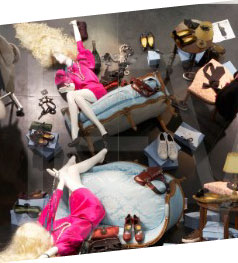

о нас
консалтинг
обучение
проекты
публикации
контакты
визуальный мерчандайзинг
дизайн магазинов
вм-обучение
НАШИ ПУБЛИКАЦИИ 2015 - 2017
ВИЗУАЛЬНЫЙ МЕРЧАНДАЙЗИНГ МАГАЗИНОВ ОБУВИ И АКСЕССУАРОВ
январь 2017
«Тонкости заморской распродажи. Как оформляют и зонируют обувные магазины Нью-Йорка в период больших скидок»
—
Shoes report
март 2016
«Визуальная стандартизация.Что такое стандарты ВМ и как их создать?»
—
Shoes report
октябрь 2016
«Великолепная пятерка; интересные дизайны обувной розницы»
—
Shoes report
август 2016
«Эмоциональный эффект; каким должен быть эффективный торговый концепт обувного бренда»
—
Shoes report
ноябрь 2016
«Эмоциональный шопинг и новогодняя витринистика»
—
Shoes Report
сентябрь 2015
«Поднимаем продажи. Как увеличить трафик покупателей и объем продаж в магазине с помощью инструментов ВМ»
—
Shoes report
декабрь 2012
«Джаз и прямо сейчас!» — новогодние витрины «Эконики»
—
Shoes Report
КОММЕРЧЕСКИЙ
ВИЗУАЛЬНЫЙ МЕРЧАНДАЙЗИНГ
сентябрь 2016
«Инструмент быстрого реагирования»
—
profashion
март 2016
«ВИЗУАЛЬНАЯ СТАНДАРТИЗАЦИЯ Что такое стандарты ВМ и как их создать?»
—
Shoes report
март 2015
«Bизуальный мерчандайзинг- это нечто среднее между математикой и чистым креативом»
—
WZOR
сентябрь 2015
«Поднимаем продажи. Как увеличить трафик покупателей и объем продаж в магазине с помощью инструментов ВМ»
—
Shoes report
январь 2016
«КУРС НА ВЫЖИВАНИЕ; Стратегии лидеров на падающем рынке»
—
profashion
октябрь 2012
КАК РАСЧИТАТЬ ОПТИМАЛЬНУЮ ВМЕСТИМОСТЬ МАГАЗИНА?
—
fashion report
декабрь 2015
«ОКНО В ПРОДАЖИ»
—
profashion
май 2016
«Визуальный мерчандайзинг возможно постичь только на практике!»
—
портал FashionUnited
ДИЗАЙН МАГАЗИНОВ
И ТОРГОВЫЕ КОНЦЕПЦИИ БРЕНДОВ
август 2016
«Эмоциональный эффект; каким должен быть эффективный торговый концепт обувного бренда»
—
Shoes report
октябрь 2016
«Великолепная пятерка; интересные дизайны обувной розницы»
—
Shoes report
сентябрь 2013
Качественный мерчандайзинг и оформление детского магазина
—
TradeMaster
Длинный узкий магазин, как организовать торговое пространство?
—
Shoes report

ВИТРИНИСТИКА
август 2016
«Креативные витрины; актуальные тенденции и мировые практики» —
profashion
сентябрь 2015
«Поднимаем продажи. Как увеличить трафик покупателей и объем продаж в магазине с помощью инструментов ВМ» —
Shoes report
ноябрь 2016
«Эмоциональный шопинг и новогодняя витринистика» —
Shoes Report
август 2015
Низкобюджетная витрина не значит плохая —
портал FashionUnited
декабрь 2015
«Окно в продажи» —
profashion
апрель 2015
За стеклом: мировые тренды витринистики —
New-retail.ru
декабрь 2014
Витрины магазинов становятся все прагматичнее и информативнее —
Газета Ведомости
декабрь 2015
Эмоциональные продающие витрины. Как заставить покупателя зайти в ваш магазин и статьего покупателем —
Shoes Report
лето 2014
Витрины: креатив и точный расчет часть 1 —
Индустрия моды
осень 2014
Витрины: креатив и точный расчет часть 2 —
Индустрия моды
август 2016
FCG–интервью А.Б 5 главных вопросов о ВМ